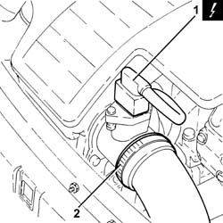
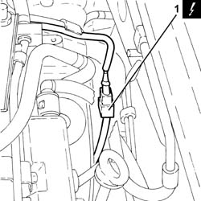
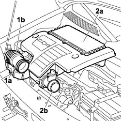
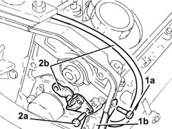
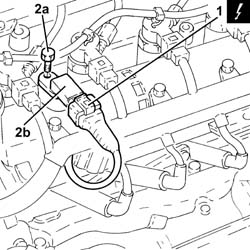

1060G22 cam angle sensor - r r
- Path
- Procedures > 10 ENGINE > 1060 DIESEL FUEL INJECTION > 1060G pressure pump electric control > 1060G22 cam angle sensor - r r
- Kind
- repair procedure (removal / refitting; the operation number is the code)
- Applies to
- all engines; all production periods
- Interactive page
- https://sloeber94.github.io/elrnDB-fDbl/en/#/2584416
Applies to: all engines; all production periods
 Removing
Removing
 Refitting
RefittingPosition the car on the ramp.
Ensure that the ignition key is in the OFF position, then disconnect the negative battery terminal.
 | Name | Connector |
|---|---|---|
- | Battery | A1 |
1. Disconnect the electrical connection from the air flow meter.
| Name | Connector |
|---|---|---|
1 | Air flow meter | K41 |
2. Loosen the band and disconnect the the turbocharger air inlet sleeve from the rigid pipe, air flow meter side.

Applies to: all engines; all production periods
Removing
RefittingPosition the vehicle on the ramp.
Ensure that the ignition key is in the stop position, then disconnect the battery negative terminal.
| Name | Connector |
|---|---|---|
- | Battery | A1B |
1. Disconnect the electrical connection for the cam angle sensor and release the wiring from the fastenings on the upper protective timing cover.
| Name | Connector |
|---|---|---|
1 | Timing sensor | K47 |

Applies to: all engines; all production periods
1. Loosen the band (1a) and disconnect the flexible hose (1b) from the air intake.
2. Remove the air filter (2a) complete with air flow meter (2b) by releasing from the underlying pins and then from the rear fastening.

Applies to: all engines; all production periods
Proceed with the removal 4450B04 right front wheel r r .
Proceed with the removal 1092G10 single engine belt r r .
Proceed with the removal 1092A10 Crankshaft services PULLEY - R.R. .
Proceed with the removal 1008A46 .
Proceed with the removal 1032D12 timing system protective cover(s) - r + r .
Proceed with the removal 1032B10 toothed timing belt - r + r for timing adjustment or replacement .
Proceed with the removal 1032B61 timing belt pulley - r r .
1. Undo upper bolt (1a) securing the protective side timing cover (1b).
2. Undo the bolts (2a) and remove cam angle sensor (2b) after having released the electrical wiring from the protective side timing cover.

Applies to: all engines; all production periods
1. Disconnect the electrical connection from the cam angle sensor.
| Name | Connector |
|---|---|---|
1 | Timing sensor | K47 |
2. Undo the bolt (2a) and remove the cam angle sensor (2b).

Applies to: all engines; all production periods
Refitting
RemovingPlace the cam angle sensor back in its housing and secure using the bolts. Position the wiring behind the protective side timing cover.
Tighten the upper bolts securing the protective side timing cover.
Proceed with the refitting 1032B61 timing belt pulley - r r .
Proceed with the refitting 1032B10 toothed timing belt - r + r for timing adjustment or replacement .
Proceed with the refitting 1032D12 timing system protective cover(s) - r + r .
Proceed with the refitting 1008A46 .
Proceed with the refitting 1092A10 Crankshaft services PULLEY - R.R. .
Proceed with the refitting 1092G10 single engine belt r r .
Proceed with the refitting 4450B04 right front wheel r r .
Connect the electrical connection for the cam angle sensor and secure the electrical wiring to the upper protective timing cover.
Connect the battery terminal (-).
Remove the car from the ramp.
Applies to: all engines; all production periods
Refitting
RemovingPlace the cam angle sensor back in its housing and fix it using the bolt to the specified torque.
 | Fastening | Component | Ø | Value (daNm) |
|---|---|---|---|---|
- | Bolt | CAM ANGLE SENSOR | M6 | (Cylinder head side) 0.6 ÷ 0.8 |
Connect the electrical connection to the cam angle sensor.
| Name | Connector |
|---|---|---|
- | Timing sensor | K47 |
Refit the air filter complete with air flow meter, engaging it in the rear attachment and then in the underlying pins.
Connect the flexible hose to the air intake on the crossmember and tighten the fixing band.
Connect the air intake sleeve to the turbocharger, air flow meter side, and tighten the band.
Connect the electrical connection to the air flow meter.
| Name | Connector |
|---|---|---|
- | Air flow meter | K41 |
Connect the battery negative terminal.
| Name | Connector |
|---|---|---|
- | Battery | A1 |
Remove the car from the ramps.
Topics linked from this page (7)
- 1008a46 cam shaft left rigid mount - r r
- 1032B10 toothed timing belt - r + r for timing adjustment or replacement
- 1032B61 timing belt pulley - r r
- 1032D12 timing system protective cover(s) - r + r
- 1092A10 Crankshaft services PULLEY - R.R.
- 1092G10 single engine belt r r
- 4450B04 right front wheel r r